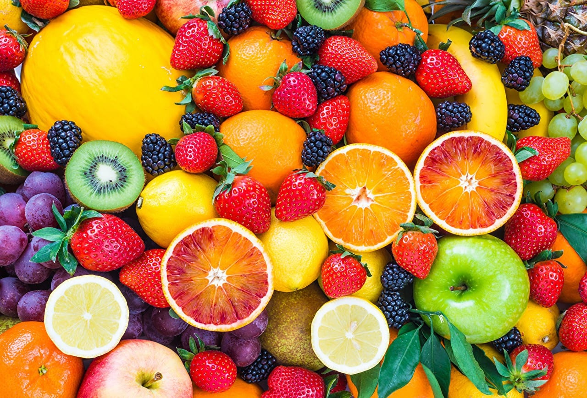

La pollinisation

Les abeilles jouent un role capital dans la reproduction des végétaux: en passant de fleur en fleur, elles se chargent de grains de pollen et assurent la fécondation des plantes. C'est grâce à elles et aux autres pollinisateurs que nous pouvons manger des fraises, des cerises, avocats, mais aussi des légumes comme les courges, les salades, et le cacao, les noix... Au total ce sont 80% des espèces végétales qui sont dépendantes de la pollinisation, et autant d'espèces animales.
